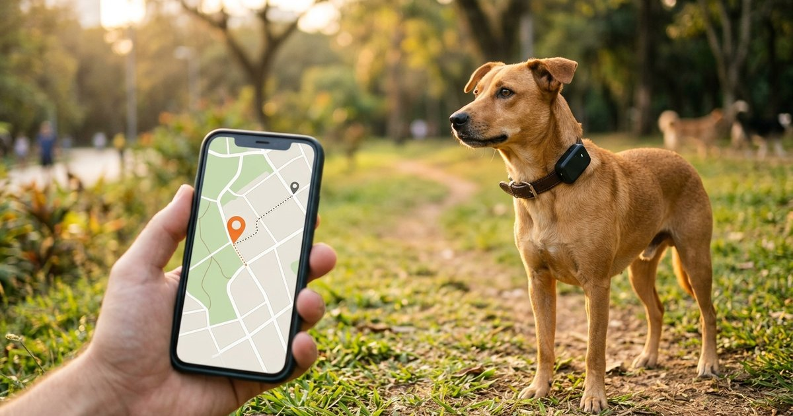
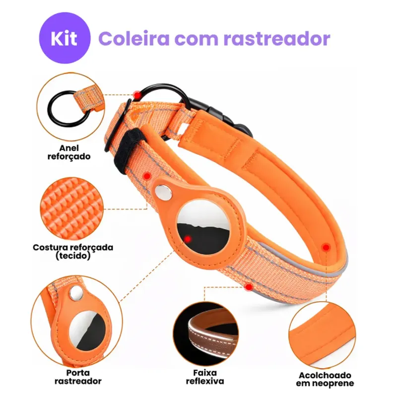

Como Funciona a Coleira GPS para Cachorro: Satélite, Chip 4G e Tag Bluetooth Explicados

A coleira GPS para cachorro faz duas tarefas. Primeiro ela descobre onde o cão está, pelo sinal dos satélites GPS e, quando há teto ou prédios no caminho, pelas redes Wi-Fi e torres de celular por perto. Depois ela envia essa posição pelo chip 4G para o servidor da marca, que mostra o ponto no mapa do app. Sem o chip, a posição não chega ao seu celular. As tags Bluetooth, como o AirTag, funcionam de outro jeito: não têm GPS nem chip e dependem de celulares de outras pessoas passando perto do cão.
The Pet GPS 4G: GPS com chip e 1 ano de dados inclusos, sem precisar comprar plano.Link de afiliado — sem custo extra para você.
Ver preço no Mercado Livre →Resumo em 4 pontos
- Onde o cão está: satélite GPS ao ar livre (cerca de 5 m de erro); Wi-Fi e torres de celular dentro de casa (dezenas a centenas de metros).
- Como a posição chega a você: pelo chip 4G. Por isso quase toda coleira GPS tem custo de dados: assinatura, renovação ou plano do chip.
- Tag Bluetooth não é GPS: sem chip e sem mensalidade, mas só atualiza quando um celular da mesma rede passa perto.
- Bateria: GPS 4G dura de 4 a 7 dias; tag Bluetooth, meses.
Do Satélite ao Seu Celular: o Caminho da Localização
É mais fácil entender a coleira GPS seguindo o caminho que a posição faz até aparecer no app:
- Os satélites transmitem. Os satélites GPS enviam sinais o tempo todo. A coleira não manda nada para eles: só escuta.
- A coleira calcula onde está. Com o sinal de pelo menos quatro satélites, o receptor calcula a latitude e a longitude. Se o céu estiver bloqueado, ela recorre às redes Wi-Fi e às torres de celular próximas.
- O chip envia a posição. A coleira usa a internet móvel do chip (4G) para mandar as coordenadas ao servidor da marca, como um celular mandando uma mensagem.
- O servidor confere as regras. Ele guarda o histórico e compara a posição com a cerca virtual que você desenhou. Se o cão saiu da área, dispara o alerta.
- O app mostra no mapa. Você vê o ponto, o trajeto e a hora da última atualização. É essa hora que diz se a posição é recente.
A Tractive, fabricante de rastreadores pet, descreve o mesmo processo: a posição vem dos satélites e é enviada ao app pela rede móvel de um chip interno.
Como a Coleira Descobre Onde o Cão Está
Quase todo rastreador 4G combina três fontes de localização e escolhe sozinho a melhor disponível. O que muda entre elas é a precisão:
| Fonte | Como funciona | Precisão típica | Onde falha |
|---|---|---|---|
| GPS por satélite | Calcula a posição pelo tempo que o sinal de cada satélite leva para chegar | Cerca de 5 m com céu aberto | Dentro de casa, entre prédios altos, mata fechada |
| Wi-Fi | Lê os identificadores das redes Wi-Fi por perto e compara com um banco de redes já mapeadas (não precisa se conectar a elas) | Dezenas de metros | Área rural, onde há poucas redes |
| Torres de celular (LBS) | Estima a posição pelas antenas da operadora que o chip enxerga | Centenas de metros a quilômetros | Área rural, onde as antenas são distantes |
O número de 5 metros tem fonte: o GPS.gov, site do governo dos EUA que mantém o sistema, informa que celulares com GPS costumam acertar num raio de 4,9 m com céu aberto, e que a precisão piora perto de prédios, pontes e árvores. A Tractive declara 5 a 10 m para os seus rastreadores. Coleiras mais simples tendem a ficar no limite de cima.
Na prática: quando o app mostra um círculo grande em volta do ponto, a coleira provavelmente está usando Wi-Fi ou torre de celular, não satélite. Isso é comum quando o cão está dentro de casa ou escondido debaixo de um carro. Não é defeito.
Como a Posição Chega ao App: Chip, Mensalidade e Cobertura
O GPS sabe onde o cão está, mas não sabe mandar isso para ninguém. Quem faz a entrega é o chip, o mesmo tipo de SIM do celular. É por isso que coleira GPS de verdade quase sempre tem algum custo de dados. Os modelos seguem três formatos:
| Formato | Como funciona | Custo depois da compra | Exemplo |
|---|---|---|---|
| Chip incluso por um período | O chip já vem dentro, ativado, com dados por um tempo | Renovação ao fim do período | The Pet GPS 4G (12 meses) |
| Chip comum à parte | Você compra um chip de operadora e coloca no aparelho | Plano de dados ou recarga do chip | ANXK G68 4G |
| Assinatura da marca | O chip é da marca e funciona em várias operadoras | Mensalidade ou anuidade da marca | Tractive (marca europeia) |
Três cuidados que valem para qualquer formato:
- Cobertura: a coleira só envia a posição onde a operadora do chip tem sinal. Se o cão vai a sítio ou praia, confira o mapa de cobertura da operadora para esses lugares.
- 4G: prefira aparelho 4G. Os modelos só 2G dependem de uma rede antiga e com menos antenas novas.
- Selo da Anatel: todo aparelho com chip vendido no Brasil precisa ser homologado pela Anatel. A The Pet GPS informa a homologação no anúncio; nos outros, procure o número no anúncio ou na caixa.
Quer evitar a mensalidade? Compare as opções em coleira GPS sem mensalidade.
Tag Bluetooth (AirTag, Google, Samsung): Como Funciona e Por Que Não É GPS
Muitos anúncios chamam de "GPS" uma tag Bluetooth. Ela funciona de outro jeito:
- A tag emite um sinal Bluetooth, fraco e de curto alcance (dezenas de metros). Ela não sabe onde está.
- Um celular da mesma rede passa perto (iPhone para AirTag, Android para tags Google, Galaxy para SmartTag) e capta o sinal, sem que o dono desse celular perceba.
- Esse celular envia a própria posição, de forma anônima e criptografada, para a rede da marca.
- O seu app mostra onde a tag foi vista pela última vez.
É assim que funcionam a rede Buscar da Apple e a rede Encontre Meu Dispositivo do Google. A vantagem: sem chip, sem mensalidade, peso de 9 a 11 g e pilha que dura meses. A desvantagem: a posição só atualiza quando alguém com um celular compatível passa perto. Em rua movimentada isso acontece em minutos; em sítio, trilha ou estrada vazia, pode levar horas.
Há ainda um efeito colateral: Apple e Google avisam quem está andando com uma tag desconhecida, para evitar uso indevido. Se alguém pegar o seu cão, pode receber esse alerta. Para entender quando cada tipo compensa, veja coleira GPS Bluetooth ou com chip.
Tempo Real, Atualização e Bateria
A coleira não fica transmitindo sem parar: ela acorda, calcula a posição, envia e volta a "dormir". O intervalo entre um envio e outro é o que define quanto a bateria dura:
| Modo | Com que frequência atualiza | Efeito na bateria | Quando usar |
|---|---|---|---|
| Ao vivo / tempo real | A cada poucos segundos (a Tractive fala em 2 a 3 s) | Gasta rápido | Só durante a busca, com o cão sumido |
| Normal | A cada poucos minutos, conforme o modelo | Equilíbrio | Dia a dia, com cerca virtual ligada |
| Economia | Em intervalos longos ou só quando o cão se move | Dura mais | Viagem ou quando não dá para carregar |
Nos rastreadores 4G que analisamos, os fabricantes declaram de 4 dias (ANXK G68) a 7 dias (The Pet GPS) de bateria. As tags Bluetooth usam pilha de relógio: a Apple fala em cerca de 1 ano para o AirTag. Se a localização "demora", olhe primeiro o modo configurado no app e a hora da última atualização.
Cerca Virtual: Como o Alerta de Fuga Funciona
A cerca virtual é um perímetro que você desenha no mapa do app, por exemplo em volta da casa. A cada nova posição, o sistema confere se o cão está dentro ou fora dessa área. Se estiver fora, você recebe a notificação.
Duas consequências práticas:
- O alerta chega com o atraso da atualização. Se a coleira envia a posição a cada 3 minutos, o aviso pode chegar até 3 minutos depois da fuga.
- Raio pequeno demais gera alarme falso. Dentro de casa a coleira usa Wi-Fi ou torre, com erro de dezenas de metros, e o ponto pode "pular" para fora. Deixe uma folga além do muro.
O passo a passo de configuração está em cerca virtual para cachorro.
Por Que a Coleira GPS às Vezes Erra ou Some do Mapa
- O cão está dentro de casa ou coberto. Sem satélite, a coleira usa Wi-Fi ou torre e o ponto fica impreciso.
- Não há sinal da operadora. A coleira pode até saber onde está, mas não consegue enviar. O app mostra a última posição enviada.
- O chip ficou sem dados ou o período incluso acabou. É uma das causas mais comuns de "parou de funcionar".
- A bateria está fraca ou o modo economia está ligado. As atualizações ficam espaçadas.
- O app perdeu a permissão de notificação no celular, e os alertas de cerca virtual não aparecem.
Mais casos e como resolver em erros comuns com coleira GPS.
Na Prática: Um Exemplo de Cada Tipo
Para ver a teoria em produtos reais, separamos um exemplo de cada formato, todos à venda no Mercado Livre com entrega no Brasil. Os preços são da data indicada em cada card; confira no link antes de comprar.

The Pet GPS 4G
O formato mais simples para quem não quer lidar com chip: ele já vem dentro da coleira, com 12 meses de rastreamento inclusos.
- Bateria de até 7 dias, carregador magnético
- Cerca virtual com alerta de fuga, histórico de trajeto, alarme sonoro, tag com QR Code
- Homologada pela Anatel; nota 4,5 com 51 avaliações
- Contras: o anúncio não informa o valor da renovação depois de 12 meses; é o mais caro dos quatro
R$ 718 (12/11/2026) Ver preço

ANXK G68 4G
Um exemplo das três fontes de localização juntas: o anúncio informa GPS, Wi-Fi e torres de celular. O chip com plano de dados você compra à parte, na operadora que pega melhor onde o cão anda.
- 27 g, bateria de 850 mAh (cerca de 4 dias, segundo o fabricante)
- Cerca virtual com alerta e histórico de rotas de 90 dias
- IP65: aguenta chuva e respingos, mas não mergulho
- Contras: só 1 avaliação publicada; o anúncio não informa a medida da coleira
R$ 298,99 (16/11/2026) Ver preço

Kit coleira com tag Apple (Ideashop)
Coleira acolchoada e refletiva com tag de 9 g na rede Buscar da Apple. Sem chip e sem mensalidade.
- Tag com pilha CR2032; Modo Perdido no app Buscar
- Nota 4,5 com 74 avaliações; vendedor MercadoLíder Gold
- Contras: não é GPS; só iPhone; a coleira não é resistente à água
R$ 123,38 (12/11/2026) Ver preço

Coleira com tag Google (Mestre S10)
A versão Android: a tag entra na rede Encontre Meu Dispositivo do Google (Android 9 ou superior), de qualquer marca de celular. A foto do anúncio mostra um gato, mas o tamanho P (22 a 35 cm) serve para cães pequenos.
- Alarme pelo app a até 150 m; resistente a água e poeira, segundo o anúncio
- Contras: não é GPS; nota 3,9 com só 15 avaliações; uma avaliação diz que a localização só aparecia perto do próprio celular
R$ 151,99 (16/11/2026) Ver preço
Qual Tipo Combina com o Seu Cão
- Já fugiu, passeia solto ou vive em casa com quintal ou sítio: GPS 4G com chip. Veja coleira GPS para cachorro que foge.
- Vive em apartamento e o risco é escapar pela porta: uma tag Bluetooth da marca do seu celular costuma bastar na cidade.
- Cão pequeno: o peso do aparelho importa. Veja coleira GPS para cachorro pequeno.
- Quer que quem achar o cão saiba quem é o tutor: isso é trabalho da plaquinha e do microchip, não do GPS. Entenda em coleira GPS ou microchip.
- É gato: o peso e o fecho mudam tudo. Veja coleira GPS para gato.
Como Escolhemos
Não testamos os aparelhos. A explicação técnica vem das fontes citadas no texto (GPS.gov, Apple, Google e Tractive). Os exemplos saíram dos produtos que já analisamos no comparativo de coleira GPS para cachorro e no de cachorro pequeno: escolhemos um de cada formato (chip incluso, chip à parte, tag Apple e tag Google), todos com entrega no Brasil. Bateria, recursos e preço vêm dos anúncios no Mercado Livre e das especificações dos fabricantes.
Conclusão
A coleira GPS para cachorro funciona em duas etapas: o satélite (ou o Wi-Fi e as torres, quando o céu está bloqueado) diz onde o cão está, e o chip 4G leva essa posição até o seu celular. Daí vêm as três perguntas que importam antes de comprar: tem chip?, quanto custa o dado depois? e a operadora pega onde o cão anda?. Se a resposta para o chip for "não", é uma tag Bluetooth: ótima e barata na cidade, fraca no sítio. Para comparar modelos, volte ao guia de coleira GPS para cachorro.
🐾 The Pet GPS 4G: GPS com chip e 1 ano de rastreamento incluso. Veja o preço de hoje.
Ver preço no Mercado LivreLink de afiliado: podemos receber uma comissão por compras feitas através deste link, sem custo adicional para você.
Perguntas Frequentes
Como funciona a coleira GPS para cachorro?
Ela faz duas coisas. Primeiro descobre onde o cão está, pelo sinal dos satélites GPS e, quando o céu está encoberto por teto ou prédios, pelas redes Wi-Fi e torres de celular por perto. Depois envia essa posição pela internet do chip 4G para o servidor da marca, que mostra o ponto no mapa do aplicativo no seu celular.
Coleira GPS para cachorro precisa de chip?
Sim, se for GPS de verdade. O chip é o que leva a posição até o seu celular. Alguns modelos já vêm com chip e um período de dados incluso, como a The Pet GPS com 12 meses; outros pedem um chip comum de operadora com plano de dados, comprado à parte. Tags Bluetooth, como AirTag, não usam chip nem têm GPS.
Coleira GPS tem mensalidade?
Quase sempre existe um custo de dados. Pode ser a assinatura da marca, a renovação depois do período incluso ou o plano do chip que você coloca. Só as tags Bluetooth (Apple, Google, Samsung) não têm mensalidade, porque usam os celulares de outras pessoas por perto para informar a posição.
Qual a precisão da coleira GPS para cachorro?
Ao ar livre, com céu aberto, a posição costuma ficar a cerca de 5 metros do ponto real; o GPS.gov cita 4,9 metros para celulares com GPS, e a Tractive declara 5 a 10 metros para os seus rastreadores. Dentro de casa ou entre prédios, a coleira passa a usar Wi-Fi e torres de celular, e o erro sobe para dezenas ou centenas de metros.
A coleira GPS funciona sem sinal de celular?
O GPS continua recebendo o sinal dos satélites, mas a coleira não consegue enviar a posição ao app enquanto não houver sinal da operadora do chip. No mapa aparece o último ponto enviado. Por isso vale confirmar a cobertura da operadora nos lugares onde o cão anda, principalmente em sítio e área rural.
AirTag funciona como coleira GPS?
Não. O AirTag não tem GPS nem chip. Ele emite um sinal Bluetooth que iPhones de qualquer pessoa por perto captam e repassam, de forma anônima, para o app Buscar. Na cidade isso costuma atualizar rápido; em sítio, trilha ou estrada vazia, a posição pode ficar horas sem atualizar.
Quanto tempo dura a bateria da coleira GPS?
Os rastreadores 4G que analisamos duram de 4 a 7 dias segundo os fabricantes, e menos se você usar o modo em tempo real o tempo todo. As tags Bluetooth usam pilha que dura meses: a Apple fala em cerca de 1 ano para o AirTag.
Escrito por Nildo Alves para o Smart Pet Gadgets. Fontes consultadas em 22/11/2026. Preços e especificações vêm dos anúncios no Mercado Livre entre 12/11 e 16/11/2026 e podem mudar. Veja nossa política editorial e como verificamos as fontes citadas neste artigo.